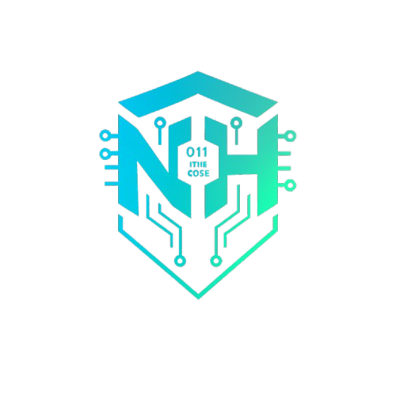

"In the world of systems programming, overhead is failure. We analyze the assembly output of our kernels to ensure that not a single NOOP (No-Operation) is wasted. By optimizing for the cache and eliminating unnecessary context switches, we provide the foundational stability required for high-frequency trading, aerospace guidance, and mission-critical infrastructure."
Designing purpose-built kernels ranging from lightweight microkernels for IoT to high-performance monolithic kernels for specialized workstations, with a focus on memory safety and low-latency interrupt handling.
Developing reliable drivers and Hardware Abstraction Layers that provide seamless, deterministic communication between software and proprietary silicon.
Engineering deterministic real-time systems with guaranteed timing constraints, enabling dependable operation in robotics, aerospace, and industrial automation.
At the lowest layers of computing, abstraction is not an excuse for inefficiency. Every instruction matters. Every cache miss has a cost. Every unnecessary context switch is a failure of design. Our work begins where most software ends — at the boundary between silicon and logic. We design and build operating systems, kernels, and runtime environments with a deep respect for hardware behavior. From analyzing compiler output and assembly paths to tuning memory layouts and interrupt handling, our approach is rooted in determinism, predictability, and control.
Our systems are engineered for environments where reliability is non-negotiable: high-frequency trading platforms, aerospace systems, industrial automation, robotics, and security-critical infrastructure. We believe that correctness precedes features, and that true optimization is achieved through understanding, not shortcuts. By minimizing overhead, enforcing memory safety, and embracing hardware-aware design, we deliver foundations that software can trust. This is not general-purpose computing. This is software built with intent.
We design purpose-built kernels tailored to specific operational requirements. Our work spans: Lightweight microkernels for embedded and IoT environments High-performance monolithic kernels for specialized workstations Hybrid designs balancing modularity and execution speed Each kernel is engineered with strict control over memory, scheduling, and interrupt paths to ensure low latency and predictable behavior.
We optimize at the instruction level:
Assembly analysis to eliminate redundant operations
Cache-aware memory layouts and data structures
Reduced syscall overhead and minimized context switching
The result is software that respects the hardware pipeline and performs consistently under load.
We build robust, deterministic drivers and HALs that bridge software with proprietary or specialized hardware:
We engineer real-time systems with guaranteed timing constraints: